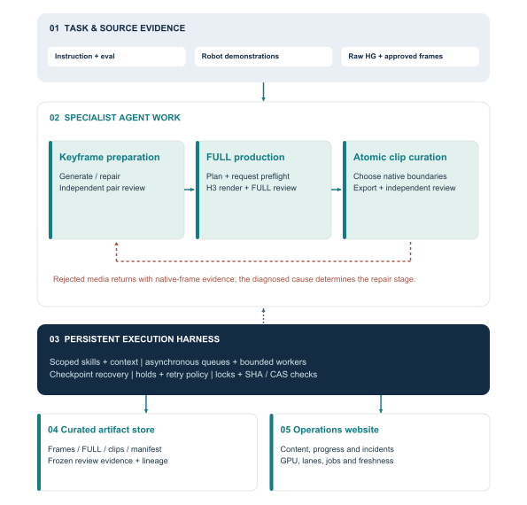
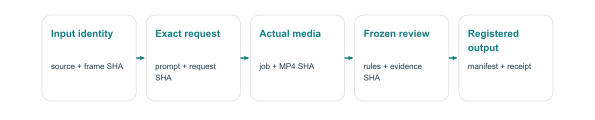
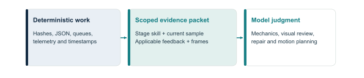
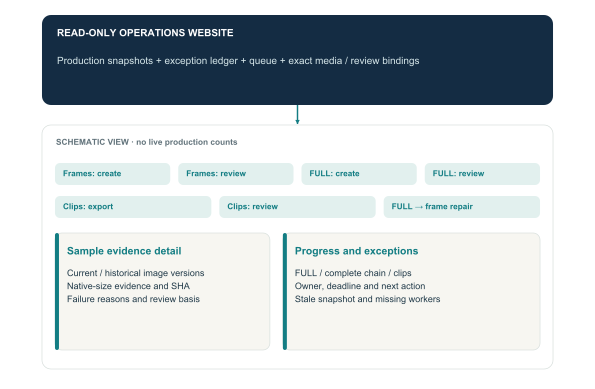
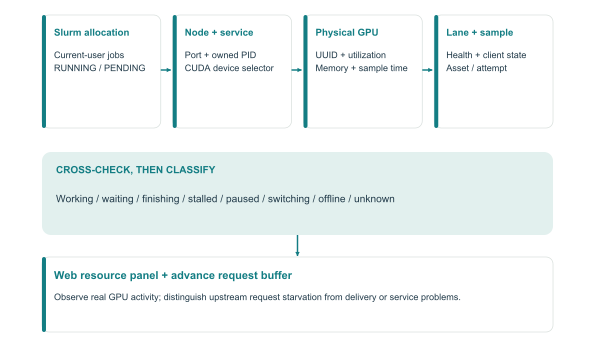
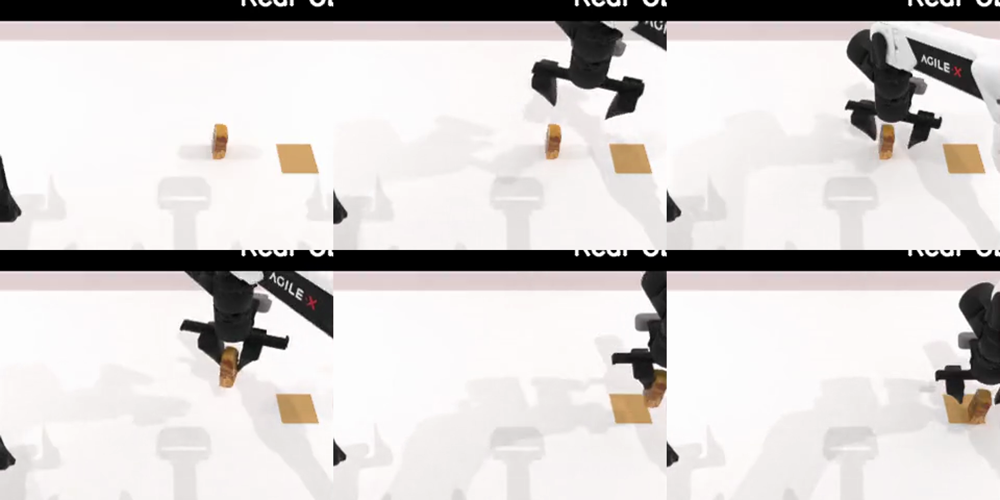

Method at a glance
How it works
- 01SpecifyDefine the task, action phases, and required start/end states.
- 02Generate & reviewAgent workflows produce and check demonstration material.
- 03Compose contextSelect compatible human-video and action clips.
- 04Evaluate transferRun the same robot task under controlled context conditions.
Project workflow schematic.
The research question
At TRESP Lab, I first explored transferring skill and memory mechanisms from LLM agents to VLA policies in August 2026. The limitations of that approach motivated a shift to RICL / Zero-WAM in September, focusing on what a robot can learn directly from demonstration context.
A human demonstration specifies more than an object name: it conveys action order, contact, movement, and the intended final state. My RICL project asks how much of that information can be reused when the target robot task changes. Instead of requiring one exact human demonstration for every scene, the longer-term objective is to construct appropriate visual guidance from reusable skills.
The project separates two questions: whether a complete video from a related task transfers useful information, and whether shorter, spatially compatible clips can be composed into stronger instructions. This distinction keeps a simple transfer baseline separate from the more ambitious compositional-learning objective.
My contribution
I designed and implemented the agentic data-generation architecture around the RICL experiments: specialist agents handle task-grounded planning, visual review and diagnosis, while a persistent execution framework coordinates stages, queues, ownership, recovery and artifact registration. Content and GPU supervision make quality issues and resource bottlenecks inspectable.
The workflow turns task and robot-demonstration evidence into conditioning frames, candidate HumanGen / transfer-HG videos, independently reviewed atomic clips and traceable dataset records. I also build reusable demonstration clips and controlled context-transfer evaluations.
My model research uses the Zero-WAM authors’ released backbone. The engineering contribution described here is the surrounding agent system, data construction and evaluation infrastructure. The November 2026 bilingual report documents that implementation in detail.
Agent architecture: from task evidence to reviewed data
I structured the system around three responsibilities. Specialist agents interpret demonstrations, plan sample-specific motion, inspect generated media and diagnose failures. A persistent execution framework manages stage contracts, asynchronous queues, bounded workers, checkpoints and retries. The surrounding system connects generation services, curated artifacts and operational supervision.
The five modules connect task/source evidence, specialist agent work, persistent orchestration, a curated artifact store and an operations website. Separate skills cover conditioning-frame generation and review, full-video generation and review, and atomic-clip export and review. Each stage has its own inputs, acceptance conditions and recovery route.
Read the Dataset Agent system reports and supporting material

Independent review, targeted repair and persistent recovery
Approval is stage-specific: an approved image pair does not approve its generated video, and a full-video approval does not approve the exported clip chain. Review checks the actual media and native frames, including action completion, working hands, object identity, fixed props, contact, continuity and reference alignment. Longer actions can use separately planned and reviewed segments joined at approved shared frames.
A rejection returns frame-level evidence to the dependency that needs repair. Conflicting conditioning frames are repaired and independently reviewed; a motion failure leads to request replanning. Technical failures preserve the submitted request and job identity so that a recoverable service error does not automatically trigger a new generation.
Source, request, generated-media and review hashes bind each verdict to the exact artifact revision. Ownership, locks and compare-and-swap checks guard registration, while checkpoints and independent worker pools allow unaffected samples to continue.


Token-aware execution: six implemented mechanisms
The system reserves model calls for mechanics, visual judgments and repair decisions. Deterministic validation and routine supervision run in code, while model-facing evidence is scoped to the active stage and sample.
| Mechanism | Implementation | Purpose |
|---|---|---|
| Stage-specific skills | Load only the instructions for the assigned generation, review or curation stage. | Keep unrelated instructions out of the model context. |
| Scoped feedback and invalidation | Use sample feedback and task-specific policy signatures. | Avoid replanning valid work after unrelated changes. |
| Deterministic checks in code | Validate hashes, request bindings, JSON and registration conditions programmatically. | Reserve model effort for semantic decisions. |
| Remove a redundant screening tier | The documented direct-review path routes produced videos to independent review without an additional Qwen screening pass. | Reduce inference stages while retaining acceptance checks. |
| Reuse verified work | Resume recorded jobs and media after technical failure; retain approvals while their artifact and contract remain valid. | Reduce repeated generation and review. |
| Bound diagnosis and quota retries | Keep incident ownership and checkpoints; use shared backoff and one recovery probe after quota exhaustion. | Limit duplicate investigation and failed calls. |


Content supervision: make quality and blockers visible
I built a read-only operations view that connects stage progress with exact media versions, review evidence and an exception ledger. It distinguishes current input frames from historical reviewed candidates, exposes missing or mismatched hashes, and shows who owns an incident, its deadline and the next action.
Conditioning frames, full videos, complete chains and independent clips use separate accounting units. Repair can overlap those stages rather than adding another independent completed-item count. Automatic recovery, user pauses, background diagnosis and verified human-only dependencies have distinct labels.


GPU supervision: connect resources to generation work
Resource supervision joins Slurm allocations, node/service identity, physical GPU UUIDs and actual generation lanes. Utilization, memory, service health, request state and evidence freshness are checked together to distinguish active computation, upstream request starvation, stalled delivery, switching and unknown state.
A bounded planning buffer prepares approved requests ahead of render lanes, with separate pools for planning, full-video review and input repair. The saved implementation records a ready-request target of max(16, 4 × active lanes), 10-second node sampling and a 60-second freshness threshold. These are implementation/configuration values; measured throughput and GPU speedup are not reported.


A real rejection: turn a failed frame range into repair
The report traces a retained press_stapler rejection: the review records the base footprint and hinge mount shifting during native frames 48–56, with the displacement persisting through frame 123. Stable scene references support a fixed-base failure rather than camera motion.
The response preserves the exact video, input-frame and review identity, then turns the observation into a concrete constraint: keep the base, feet, rear mount and hinge fixed throughout reaching and loaded pressing. Conflicting endpoints return to input repair and independent review before a changed request is preflighted.
This example demonstrates the diagnostic and repair contract from a saved review event. The report does not claim that the later repair succeeded. Its source index links 18 implementation records by project-relative path, line range and SHA-256.
Model: video prediction coupled to action
Zero-WAM uses separate video and action experts within a causal mixture-of-Transformers model. The inspected implementation has 30 main blocks, 3,072-dimensional hidden states, and 24 attention heads. A Wan video VAE produces 48-channel latents; spatial patches are projected into video tokens, while a shared 30-channel action representation is projected into action tokens. RoboTwin uses 16 active bimanual pose-and-gripper channels within that representation.
The human video acts as a cached visual context prefix. Given current robot observations and history, the video expert first predicts the next robot-video chunk; the action expert then predicts the aligned executable action chunk. After execution, actual camera observations replace the imagined future in the rolling cache. The baseline’s four future-chunk auxiliary heads provide training supervision and are not executed in the standard inference path.
Data: preserve robot supervision, vary the human context
The data layer uses RoboTwin trajectories with robot actions and synchronized head/left-wrist/right-wrist views. The initial A–H study covers eight manipulation tasks, including moving objects onto pads, placing a fan or shoe, rotating a QR-code object, and placing cups and containers. A separate extension investigates the remaining 42 tasks.
Generation, processing, and review are separate agent-assisted stages. Conditioning stills specify the desired start and end states; full videos are checked for the required physical task; exported clips are checked again for their own action boundaries. Robot trajectories retain their original action labels when the visual context is varied.
For atomic composition, each phase selects a corresponding clip from a reviewed source pool. Selected native frames are concatenated before the complete sequence is encoded by the causal VAE; the documented trainer uses a 61-frame composed condition. The paired robot episode retains its original action supervision. Different appearances and source videos vary the visual instruction without inventing robot action labels.
Dataset example: composed human-video context
This dataset example assembles grasping, movement and pressing clips from three HumanGen source tasks into a visual condition for stamp_seal. It shows how reusable action segments become demonstration context for the experiments.
Dataset example: bimanual clip composition
For the place_bread_basket study, I assembled a bimanual grasp segment from place_burger_fries with a placement segment from place_cans_plasticbox. The example exposes the cross-task composition directly, including the change of objects and scene at the boundary.
Grid–Goal: compatibility beyond visual similarity
Grid–Goal maps the visible tabletop through a homography into a 3 × 3 coordinate system, using the object’s actual support footprint. GRAB matches the starting cell; PLACE matches the destination cell and task-specific final orientation. MOVE first prioritizes matching endpoints, then permits compatible relative displacements with a direction difference up to 45° and a distance ratio from 0.5 to 2. Horizontal reflection transforms the media and spatial labels together.
This is explicit geometry-and-task-conditioned source selection, rather than a demonstrated learned embedding-retrieval system. The action vocabulary also distinguishes grasping, supported placement, free release, opening, pressing, striking, holding, and handover. Source timing, video hashes, object attributes, and stage-state conditions make the resulting recipes inspectable.
A controlled full-video transfer pilot
On stamp_seal, I compared an exact target-task video, a related move_stapler_pad video, and an unrelated container-placement video, using the same ten environment seeds per condition. The completed run produced the following outcomes.
- This is a small full-video replacement pilot; it does not establish a reliable advantage for atomic composition or dynamic switching.
- The local protocol uses attention window 16 and a 3 cm stamp-placement tolerance, versus the upstream 1 cm condition; the results should not be merged with the published benchmark.
| Human-video condition | Successful episodes | Success rate |
|---|---|---|
| Exact-full | 6 / 10 | 60% |
| Transfer-full | 2 / 10 | 20% |
| Unrelated-full | 1 / 10 | 10% |
Evaluation example: human condition and robot rollout
The exact-task human video used as the model’s visual condition is shown alongside its saved Zero-WAM policy rollout in RoboTwin simulation.
This is one engineering smoke example (seed 100000), separate from the composed-video examples and the ten-seed pilot below. The two recordings keep their original export timing; the robot recording shows sampled control observations.
Open original multiview rolloutHuman video condition
Robot policy rollout · simulation
Current progress and next experiments
The data audits include 400 training and 160 evaluation scenes in the eight-task study, plus 169 proposed robot action segments from representative demonstrations of the remaining 42 tasks. Candidate availability and reviewed data coverage are tracked separately from robot rollout success. Conditioning images, full videos, and exported clips have separate acceptance stages.
The confirmed exact-grid, final-orientation, and mirror policy still needs a verified integration step in the frozen training selector before a new controlled post-training comparison. Further experiments target reverse-order and mismatched-context controls, stronger held-out-task evaluation, and execution-time clip switching. The aim is to test whether the model follows the composed task specification, rather than merely behaving plausibly.
Early exploration: Embodied RSI
For the RoboDojo competition Agent Track, I am studying the algorithms used in the track and beginning preliminary research into Embodied RSI. This work is at an early learning and exploration stage; it is not presented as a completed self-improving robot system.
My current reading compares code policies, VLA-based execution, reusable skills and memory. I am also studying tool interfaces and persistent execution sessions for RoboDojo agents, including which parts of an agent change during self-improvement and whether policy weights are trained.
Project visuals





Original documents
Module reports and supporting files for the dataset-construction Agent system within RICL / Zero-WAM. The English and Chinese reports cover this engineering module: generation, review, repair, provenance and operations.
Dataset-construction Agent system · module report · Original PDF
Dataset-construction Agent report
Report on the dataset-construction Agent module: generation, review, repair, provenance and operations.
Dataset-construction Agent system · module report · Original PDF
数据集构建 Agent 系统报告
RICL / Zero-WAM 中的数据集构建 Agent 模块总结：生成、审核、修复、溯源与运行监督。
Supporting archive
Dataset Agent system: source, diagrams and evidence bundle
Supporting material for the dataset-construction Agent system: bilingual reports, diagrams, editable report source and evidence index.
Related resources
- Zero-WAM: In-Context World-Action Modeling from Human Videos for Open-Ended Task GeneralizationThe backbone, original model objectives, and published baseline results are credited to its authors.
- Zero-WAM reference implementation
- RoboTwin 2.0
Based on my data specifications, workflow reviews, model inspection, and retained pilot records. Zero-WAM is the released backbone of its original authors. HumanGen stills are identified as AI-generated conditioning examples. Updated November 2026. The preliminary Embodied RSI scope was cross-checked against my Notion research index and its executor, skills, memory and execution-interface notes. The agentic data-system sections are based on the author-provided bilingual engineering report dated 20 November 2026 and its 18-source evidence index. This report records the inspected November 13–16 implementation revisions, with configuration values distinguished from live production status and measured efficiency. Report PDFs and the complete materials archive are provided unchanged; web figures preserve the original vector artwork. The two composition videos were retrieved from the retained Linux Zero-WAM/visualization pilot exports. Original frames and timing are preserved in the web copies; HumanGen source material and the Zero-WAM backbone remain credited to their original authors. The paired human/robot demo is the exact-full stamp_seal engineering smoke run of 30 September 2026, seed 100000. The human condition is sample 206 and the robot views are saved policy observations in RoboTwin simulation. The visible high-camera crop preserves all 37 source frames and their export timing; the original multiview recording remains available.